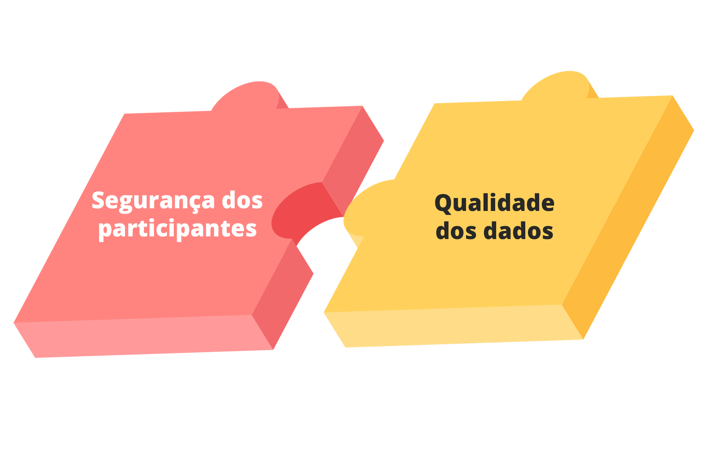

CURSO
BOAS
PRÁTICAS
CLÍNICAS
HISTÓRICO E DIRETRIZES
ÉTICAS INTERNACIONAIS


Boas-vindas
Seja bem-vindo(a) ao módulo 2 do curso Boas Práticas Clínicas:
Histórico e Diretrizes Éticas Internacionais.
Nele, você verá uma introdução do histórico da pesquisa clínica e seus referenciais, bem como conhecerá as bases documentais e preceitos da ética em pesquisas envolvendo seres humanos.
Aproveite esse conteúdo...
Bom estudo!
Siga para a próxima tela.

Módulo 2 - Boas Práticas Clínicas
Histórico e diretrizes éticas internacionais
1/29
História e Desenvolvimento das Diretrizes Éticas e das Boas Práticas Clínicas
A experimentação envolvendo seres humanos ocorre desde a antiguidade.
Relatos de “experimentos” para melhorar alguma condição a que seres humanos estiveram expostos aparecem ao longo de registros históricos datando desde a época da Grécia Antiga.
Quem foi Hipócrates e qual a sua importância no contexto do desenvolvimento das bases da pesquisa? Clique na imagem e descubra!

Módulo 2 - Boas Práticas Clínicas
Histórico e diretrizes éticas internacionais
2/29
História e Desenvolvimento das Diretrizes Éticas e das Boas Práticas Clínicas
Em um contexto histórico mais atual, a preocupação de normatizar o uso de certos produtos e, em especial, os experimentos com produtos envolvendo seres humanos, pode ser exemplificada através de alguns dos primeiros documentos que abordaram, talvez de forma embrionária, essa temática.
Clique nos anos para conhecer esses documentos.
Módulo 2 - Boas Práticas Clínicas
Histórico e diretrizes éticas internacionais
3/29
História e Desenvolvimento das Diretrizes Éticas e das Boas Práticas Clínicas
A Segunda Guerra Mundial certamente foi um dos capítulos mais tristes da história da humanidade.
Naquela época foram cometidas muitas atrocidades. Dentre as várias ocorrências reprováveis, podemos destacar o uso dos prisioneiros nos campos de concentração como “cobaias” em pesquisas.
Siga para próxima tela e veja mais informações sobre esse período.

Módulo 2 - Boas Práticas Clínicas
Histórico e diretrizes éticas internacionais
4/29
História e Desenvolvimento das Diretrizes Éticas e das Boas Práticas Clínicas
No contexto da Segunda Guerra Mundial, médicos do regime nazista alemão se aproveitaram desse cenário para realizar experimentos e abusos, utilizando seres humanos como modelos de estudo.
Clique nos números e conheça alguns experimentos que esses médicos realizavam.

Módulo 2 - Boas Práticas Clínicas
Histórico e diretrizes éticas internacionais
5/29
História e Desenvolvimento das Diretrizes Éticas e das Boas Práticas Clínicas
Refletindo sobre o caso dos médicos nazistas...
Quais problemas você destacaria na atuação desses pesquisadores levando em consideração a ética nas pesquisas clínicas?
Escreva sua resposta e clique em Confirmar.
Módulo 2 - Boas Práticas Clínicas
Histórico e diretrizes éticas internacionais
6/29
História e Desenvolvimento das Diretrizes Éticas e das Boas Práticas Clínicas
Em linhas gerais, os principais problemas que podem ser destacados sobre a forma de atuação desses pesquisadores ao realizar experimentos tão reprováveis são:
Clique nos cards e veja detalhes sobre cada problema destacado.
Ausência de Consentimento
Vulnerabilidade dos sujeitos
Não avaliação do Risco X Benefício
Módulo 2 - Boas Práticas Clínicas
Histórico e diretrizes éticas internacionais
7/29
História e Desenvolvimento das Diretrizes Éticas e das Boas Práticas Clínicas
Com o fim da guerra, a realização desses experimentos foi questionada nas esferas científica e jurídica, e isso fez crescer o sentimento de que essas ações seriam inadmissíveis.
Como resultado disso, em 1947 um tribunal para julgamento dos crimes de guerra foi realizado em Nüremberg na Alemanha.
Clique na imagem e saiba o que ocorreu após os julgamentos.
Módulo 2 - Boas Práticas Clínicas
Histórico e diretrizes éticas internacionais
8/29
História e Desenvolvimento das Diretrizes Éticas e das Boas Práticas Clínicas
Os 10 princípios básicos originados do Código de Nüremberg são:
Clique sobre cada princípio para conhecê-lo.
Módulo 2 - Boas Práticas Clínicas
Histórico e diretrizes éticas internacionais
9/29
História e Desenvolvimento das Diretrizes Éticas e das Boas Práticas Clínicas
A ocorrência dos experimentos na segunda guerra foi um fator motivador para a consolidação de um referencial para a condução de pesquisas envolvendo seres humanos.
Clique e veja o que ocorreu no caso Talidomida.
Módulo 2 - Boas Práticas Clínicas
Histórico e diretrizes éticas internacionais
10/29
História e Desenvolvimento das Diretrizes Éticas e das Boas Práticas Clínicas
Em 1964, a Associação Médica Mundial, na sua 18ª assembleia realizada em Helsinki, na Finlândia, decidiu instituir um documento agregando um conjunto de princípios éticos que regem as pesquisas médicas envolvendo seres humanos, aos quais os médicos deveriam aderir.
Siga para a próxima tela e conheça o conteúdo desse documento.
Módulo 2 - Boas Práticas Clínicas
Histórico e diretrizes éticas internacionais
11/29
História e Desenvolvimento das Diretrizes Éticas e das Boas Práticas Clínicas
Clique nos números das cartas e conheça os princípios éticos da Declaração de Helsinki.
Módulo 2 - Boas Práticas Clínicas
Histórico e diretrizes éticas internacionais
12/29

História e Desenvolvimento das Diretrizes Éticas e das Boas Práticas Clínicas
A Declaração de Helsinki original sofreu 7 revisões em reuniões realizadas nos seguintes anos: 1975, 1983, 1989, 1996, 2000, 2008 e 2013.
Vale a pena destacar que, em 2002 e 2004, foram divulgadas notas de esclarecimento deste documento.
Clique nos números e veja os principais pontos resultantes de cada umas revisões.
Módulo 2 - Boas Práticas Clínicas
Histórico e diretrizes éticas internacionais
13/29
História e Desenvolvimento das Diretrizes Éticas e das Boas Práticas Clínicas
Infelizmente, apesar de já estabelecidos os princípios básicos do Código de Nüremberg e as recomendações da Declaração de Helsinki, ocorrências de desvios na condução de pesquisas com seres humanos ainda eram observadas.
Um caso marcante foi o estudo sobre a história natural da sífilis não tratada que ocorreu entre as décadas de 1930 e 1970 no Estados Unidos da América (EUA).
Clique na imagem e conheça o Caso Tuskegee.
Módulo 2 - Boas Práticas Clínicas
Histórico e diretrizes éticas internacionais
14/29
História e Desenvolvimento das Diretrizes Éticas e das Boas Práticas Clínicas
Vale lembrar que, embora a penicilina tenha se tornado disponível como opção terapêutica contra a sífilis, desde a década de 1940, o estudo seguiu sem tratar efetivamente os pacientes acometidos pela doença sob a justificativa da importância de se acompanhar a evolução natural da doença sem interferências.
Módulo 2 - Boas Práticas Clínicas
Histórico e diretrizes éticas internacionais
15/29
História e Desenvolvimento das Diretrizes Éticas e das Boas Práticas Clínicas
Considerando o que foi praticado no Caso Tuskegee mesmo depois que a penicilina foi disponibilizada como tratamento para sífilis, ficam claros os desvios dos preceitos básicos disponíveis até então.
Dessa forma, em resposta a essas observações, foi publicado um importante documento gerado pela Comissão Nacional para a Proteção de Sujeitos Humanos na Pesquisa Biomédica e Comportamental dos EUA.
Siga para a próxima tela.
Módulo 2 - Boas Práticas Clínicas
Histórico e diretrizes éticas internacionais
16/29
História e Desenvolvimento das Diretrizes Éticas e das Boas Práticas Clínicas
O documento feito pela Comissão Nacional para a Proteção de Sujeitos Humanos na Pesquisa Biomédica e Comportamental ficou conhecido como Relatório de Belmont.
Esse documento elegeu três princípios orientadores básicos para a pesquisa envolvendo seres humanos.
Clique na imagem e conheça esses Princípios.
Além desses pilares, o documento estabeleceu o uso sistemático de princípios na abordagem de dilemas bioéticos.
Módulo 2 - Boas Práticas Clínicas
Histórico e diretrizes éticas internacionais
17/29
História e Desenvolvimento das Diretrizes Éticas e das Boas Práticas Clínicas
O desenvolvimento acelerado do campo da bioética é fruto disso. Especialmente após o Relatório de Belmont várias iniciativas de normatização eclodiam em diferentes regiões, o que foi bastante positivo.
Com o passar do tempo e com as diversas ocorrências e observações em estudos conduzidos no mundo, o arsenal regulamentar foi sendo produzido e aprimorado como respostas a tais ocorrências.
Siga para a próxima tela.
Módulo 2 - Boas Práticas Clínicas
Histórico e diretrizes éticas internacionais
18/29
História e Desenvolvimento das Diretrizes Éticas e das Boas Práticas Clínicas
Em meio a essa diversidade de visões e abordagens, começou a surgir uma preocupação com a necessidade de padronização das formas de conduzir e acompanhar os estudos envolvendo seres humanos.
Assim, em 1996, começou a ser implementado pelo ICH um guia de boas práticas clínicas.
Clique na logo do ICH e veja mais informações.
Módulo 2 - Boas Práticas Clínicas
Histórico e diretrizes éticas internacionais
19/29
História e Desenvolvimento das Diretrizes Éticas e das Boas Práticas Clínicas
Esse guia foi concebido sobre duas bases conceituais essenciais: proteção aos indivíduos e cuidado com os dados produzidos.
O Guia de BPC do ICH definiu padrões com os quais os estudos clínicos devem ser planejados, implementados e reportados, de modo que garanta ao público que os dados são dignos de credibilidade e que os direitos, a integridade e a confidencialidade dos indivíduos sejam protegidos.
Siga para a próxima tela.
Módulo 2 - Boas Práticas Clínicas
Histórico e diretrizes éticas internacionais
20/29
História e Desenvolvimento das Diretrizes Éticas e das Boas Práticas Clínicas
Inicialmente, se tornaram signatários do Guia: Estados Unidos, União Europeia, Japão, Canadá, Organização Mundial da Saúde (OMS) e outros observadores.
Vale destacar que o Brasil não era signatário deste documento.
Clique em Saiba Mais.
Módulo 2 - Boas Práticas Clínicas
Histórico e diretrizes éticas internacionais
21/29
História e Desenvolvimento das Diretrizes Éticas e das Boas Práticas Clínicas
A fim de acompanhar a evolução da pesquisa clínica no mundo, o crescimento da internacionalização dos estudo (globalização), os avanços da capacidade tecnológica, a escala e complexidade adquiridas pelos ensaios clínicos, buscando dar mais ênfase a aspectos relevantes em detrimento dos aspectos secundários e com a necessidade de diminuir más interpretações na versão anterior, o ICH publicou uma atualização do seu Guia de Boas Práticas Clínicas em 2016, o Guia ICH E6(R2).
Siga para a próxima tela e veja informações sobre o Brasil nesse contexto.

Módulo 2 - Boas Práticas Clínicas
Histórico e diretrizes éticas internacionais
22/29
História e Desenvolvimento das Diretrizes Éticas e das Boas Práticas Clínicas
É importante destacar que a versão mais atual se aplica diretamente ao Brasil, visto que ele passou a ser membro do ICH.
Através da figura da Anvisa, o Brasil tornou-se membro observador em dezembro de 2015, sendo elevado à categoria de membro efetivo em novembro de 2016. Com a entrada do Brasil para o grupo de membros do ICH temos como benefícios: (I) a possibilidade de refletir a realidade brasileira no processo de elaboração de guias considerados referências internacionais, (II) a adoção de sistemas regulatórios comparáveis e mais próximo à prática internacional, (III) incremento da possibilidade de troca de experiências, conhecimento e informações, dentre outros.
Siga para a próxima tela.
Módulo 2 - Boas Práticas Clínicas
Histórico e diretrizes éticas internacionais
23/29
História e Desenvolvimento das Diretrizes Éticas e das Boas Práticas Clínicas
Agora, veja a linha temporal dos principais fatos internacionais e surgimento dos documentos orientadores das boas práticas clínicas.
Clique nas datas destacadas.
Módulo 2 - Boas Práticas Clínicas
Histórico e diretrizes éticas internacionais
24/29
Conclusão
Neste módulo, você viu o histórico das boas práticas clínicas e aprendeu sobre os principais documentos e normativas ligados à pesquisa envolvendo seres humanos.
Agora, vamos testar seus conhecimentos?
Siga para a próxima tela.

Módulo 2 - Boas Práticas Clínicas
Histórico e diretrizes éticas internacionais
25/29
Fixando
1) São notórias as diversas atrocidades realizadas com seres humanos durante o período da Segunda Guerra Mundial. Dentre elas, incluem-se experiências envolvendo prisioneiros de campos de concentração, nos quais indivíduos vulneráveis eram submetidos a procedimentos totalmente injustificáveis, não havendo qualquer apreço pela dignidade, autonomia dos indivíduos ou mesmo pela vida humana. Como fruto do julgamento de tais crimes de guerra nasceu um importante documento, denominado:
A
Declaração Universal dos Direitos Humanos.
B
Relatório de Belmont.
C
Código de Nüremberg.
D
Declaração de Helsinki.
E
Código de Ética Médica.
Resposta correta
Parabéns, você acertou!
Resposta incorreta
Tente novamente!
Como resultado do julgamento dos crimes de guerra pelo tribunal realizado na Alemanha em 1947, nasceu o Código de Nüremberg, documento que aborda questões sobre moral, ética e conceitos legais. Esse documento deu origem aos 10 princípios básicos aos quais os médicos precisam obedecer na realização de experimentos envolvendo seres humanos.
Módulo 2 - Boas Práticas Clínicas
Histórico e diretrizes éticas internacionais
26/29
Fixando
2) A Declaração de Helsinki é um documento importante que agrega um conjunto de princípios éticos que regem as pesquisas envolvendo seres humanos. Esse documento foi o responsável por instituir, pela primeira vez, o consentimento voluntário como essencial e mandatório e por normatizar diretamente Agências Reguladoras.
Essa afirmação está:

Módulo 2 - Boas Práticas Clínicas
Histórico e diretrizes éticas internacionais
27/29
Fixando
3) Considerando o contexto histórico da evolução normativa para a pesquisa clínica e considerando o Guia das Boas Práticas Clínicas do ICH, indique a opção que traz, respectivamente, a motivação principal para criação do guia e os pilares conceituais sobre os quais esse Guia se sustenta.
A
Regulamentar a forma de atuação das Agências Reguladoras Internacionais e Normatização e Controle de ações;
B
Responder a uma demanda da Associação Médica Mundial por regulamentação da atuação do profissional médico na área de pesquisa e Normatização da atuação médica e Legislação para pesquisa;
C
Estabelecer os parâmetros mínimos a serem alcançados em estudos pré-clínicos e estudos clínicos de fases I – III e Defesa de zonas científicas e Produção de dados em larga escala;
D
A busca por atingir parâmetros para a segurança dos participantes e qualidade dos dados e Definir padrões para estudos visando comparabilidade e credibilidade do desenvolvimento de produtos em escala global;
E
Definir padrões para estudos visando comparabilidade e credibilidade do desenvolvimento de produtos em escala global e Segurança dos participantes e Qualidade dos dados.
Resposta correta
Parabéns, você acertou!
Resposta incorreta
Tente novamente!
O Guia de Boas Práticas Clínicas do ICH definiu padrões de acordo com os quais os estudos clínicos são planejados, implementados e reportados, de modo que haja uma garantia ao público de que os dados são dignos de credibilidade e que os direitos, a integridade e a confidencialidade dos indivíduos estejam protegidos. Os pilares conceituais que sustentam o Guia de BPC do ICH são: Segurança dos participantes e Qualidade dos dados.
Módulo 2 - Boas Práticas Clínicas
Histórico e diretrizes éticas internacionais
28/29

Chegamos ao final
desse módulo!

Módulo 2 - Boas Práticas Clínicas
Histórico e diretrizes éticas internacionais
29/29